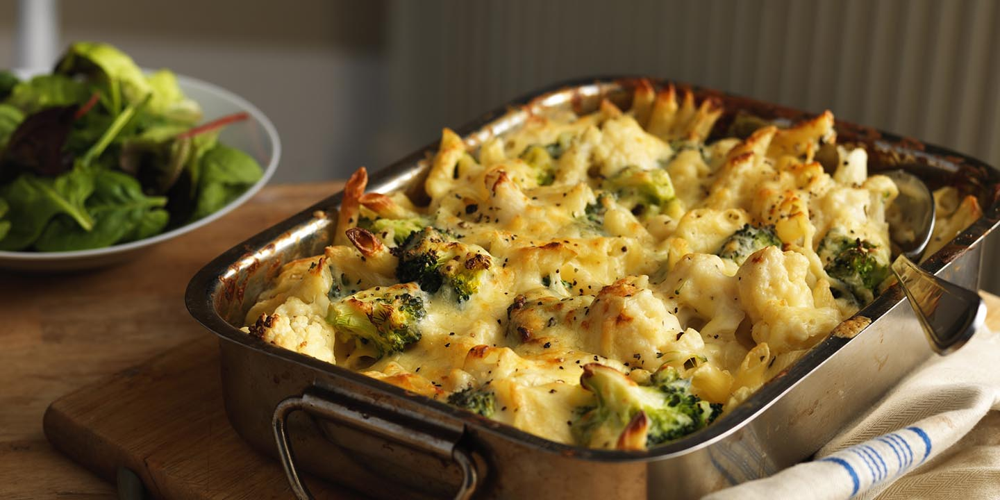

Broccoli & Cauliflower Cheese

Description
Cauliflower cheese gets more colourful with the addition of broccoli in this super Sunday lunch side dish
Ingredients
- 1 small cauliflower, leaves removed and broken into small florets
- 1 small head broccoli, broken into small florets
- 50g butter
- 50g flour
- 1 tsp mustard powder
- 500ml milk
- 100g strong cheddar, or vegetarian alternative
- 2 tbsp snipped chives
Steps
- Heat oven to 200C/180C fan/gas 6. In a very large saucepan,
cook the cauliflower in boiling salted water for 5 mins. Then add the broccoli and cook for 3 mins more.
Drain well and transfer to a large ovenproof dish.
- To make the cheese sauce, melt the butter in a small pan. When foaming, add flour and mustard powder,
and cook for 1 min, stirring constantly. Take off the heat and add the milk, a little at a time,
stirring constantly to get rid of any lumps. Once half the milk has been added, return to the heat and add the remaining milk.
Keep stirring and bring to the boil, then turn down to a simmer and cook for 2 mins, until thickened and smooth.
Add most of the cheese and some seasoning then take off the heat and add the chives.
- Pour the sauce over the vegetables and sprinkle with the remaining cheese. This can be done the day before and kept covered in the fridge.
Cook in the oven for 35-40 mins until bubbling, allowing an extra 5-10 mins cooking time if from the fridge.